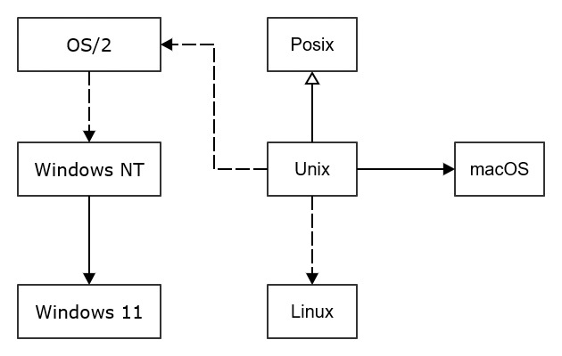

Our goals for this "Platforms" section are to provide working mental models that help us understand
the OS artifacts of program execution, e.g., performance issues with threading and paging, how to support Input/Output (IO)
with devices and files, and how to create, use, and dispose of system-wide resources.
We will not get into a lot of programming details in favor of emphasizing relatively simple models for these activities.
The models help us reason about and make good design decisions for our code.
Fig 1. Common Operating Systems

In these Basic Bites we adopt the definition:
Platform is the machine and operating system on which a program runs.
We access this platform through its OS Application Programming Interface (API), usually supported by language-based
standard library wrapper functions.
1.0 Platform
This "Platform" section presents models for
memory,
scheduling,
I/O events
and system-wide resources
like files and mutexes.
The most common platforms are Windows, MacOS, and Linux and they each have their own APIs and underlying processing.
Our discussion will present essentially the Windows models, but we will occasionally cite differences from the other
operating systems, shown in Figure 1., to avoid misleading readers. All the models are appropriate, independent
of the OS, subject to many differences in details below the model level.
Unix was developed by, and for many years, maintained by Bell Laboratories. It was one of the earliest of the modern
multi-user platforms. The various flavors of Unix are compliant or nearly compliant with
POSIX, an IEEE standard for a
common Unix interface and internal processing.
Linux has developed independently from Unix,
but adheres closely to the Unix processing models and API.
MacOS started life as a fork of Unix, has evolved significantly, but still maintains many
of the internal processing models and APIs provided by Unix.
Windows was initially developed from ideas implemented in the IBM/Microsoft operating system OS/2.
The Windows internal process models and APIs
are quite different from those used in Unix, but you see echos of the Unix ideas in much of the current Windows
implementation. Windows NT, derived from OS/2, was used to port facilities of the single-user DOS operating system to
a modern OS that supports Graphical User Interfaces (GUIs) and concurrent users. Windows 10 and 11 are direct
decendents of NT.
2.0 Kernel Objects
Kernel objects are used for mapping and sharing memory pages, managing threads, supporting asynchronous I/O,
etc. They provide access to system-wide resources.
Each of the common operating systems uses a form of object management based on handles that allow a program
to create, access, manipulate, and destroy an instance of some object residing in the kernel, e.g., a file, thread, mutex,
I/O completion port, memory mapped file, and
others. The platform provides, through its API, a way to name an instance, allowing sharing of instance data that
resides in the kernel, between scopes in one program and between programs running in the same machine.